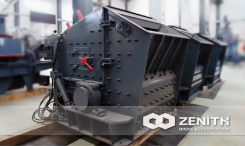

- 


Mining Crusher Machine
The rapid development of economy leads to the increasing of consuming speed of mineral resources and the increasing of mining crusher machine demand.
With the dwindling of natural mines, we can improve the economic benefits by improving and optimizing the mining crusher machines. In this article, we mainly talk about the development features of mining machines and the development trend of crusher machine market.
Development Features Of Mining Crusher Machine
- Keeping environmental friendly principle. Manufacturers avoid adopting materials that will pollute the environment.
- In order to achieve more crushing and less grinding, reducing the size of crushed materials, manufacturers focus on crusher machine for the new technology development, especially for fine and extra fine crushing equipment.
- Adopting new design concept and upsizing the mining crushing machine.
- Adopting computer technology and electrical control technology in mining crusher machine, improving the stability and accuracy of machines.
Development Trend Of Crusher Machine Market
A mechanical expert summarized the development trend of mining crusher machine market in the world from four aspects, among which ‘China factor’ becomes the most dynamic one.
Firstly, merger and acquisition activity is increasing around the world. Except for the China market, the first ten mining machinery manufacturers in the world take about 85% of the market share. The control power of the whole industry is in minority enterprises.
Secondly, the growth of the world’s mining crusher machine market is accelerating. And demand produced by the infrastructure construction in China is the main stimulus. In 2008-2009, China surpassed North America market, became the market that sell the most mining machineries in the world.
Thirdly, the rent of crusher machinery will get rapid development. In the UK, the sales volume of mining machines sold to leasing companies takes about 75% of its total sales volume. In North America, the proportion is 60%; in France, it is 50% and 40% in Germany.
Finally, manufacturing and demand of mining machines are transferring to China. Big mining crushing machinery manufacturers all start to open factories in China and also their spare parts manufacturers start to pay attention to China.
According to the expert, in the further developing of mining machineries, if the manufacturers can provide whole set equipment for customers is more and more important.